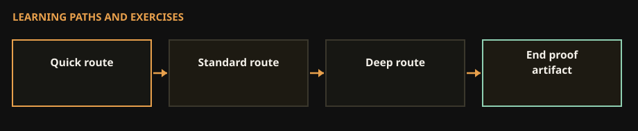
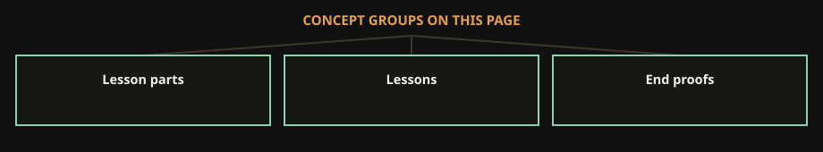

Learning paths and exercises
Three routes by time. Each core lesson holds six parts: a worked sample, a partial exercise, a solo task, a recall question, a transfer task and a late review prompt.

Routes
| Route | Time | Pages | End proof |
|---|---|---|---|
| Quick start | One hour | Start Here, Foundations, Lab 1 | One bug fix with tests green |
| Standard | Two weeks | All tool pages, Labs 1 to 3, Prompt Vault | One repo with a rule map, one skill, one verify step, one eval set |
| Deep study | Six weeks | Standard plus Research, Business, full Sources pass | One research pipeline and one gated business workflow, each with a log |
Core lesson set with six parts
Lesson A. Rule file as a map
Worked sample: OpenAI AGENTS.md near 100 lines as a table of contents, Foundations page.
Partial exercise: cut a 400 line rule file to a map. Keep each rule in a linked doc. Fill the map with at most ___ lines.
Solo task: build a map for one repo of yours.
Recall question: why does a long rule file lose force? Hint: context cost and load order.
Transfer task: apply the map form to a research notes folder, not a code repo.
Late review, day 7: open your map cold. Time a fresh agent on one task. Log rule misses.
Lesson B. Loop with an oracle
Worked sample: Antigravity goal loop, Gemini page workflow A2.
Partial exercise: write tests for a sort bug before a fix. Leave one test blank for a case you must name.
Solo task: run Lab 1, then add one test of your own.
Recall question: what makes an oracle safe? Answer: the agent holds no edit rights on the oracle.
Transfer task: set an oracle for a writing task: a claim list with one source link per claim.
Late review, day 14: re run your first loop. Compare round count and error count.
Lesson C. Fresh eyes review
Worked sample: Cherny verify subagent and Codex self review loop.
Partial exercise: write a review prompt with raw diff and test output as inputs. Leave the verdict form blank.
Solo task: run a fresh context review on one pull request of yours.
Recall question: why must a reviewer hold no writer context?
Transfer task: use a fresh reviewer on a research draft, with the ledger as raw evidence.
Late review, day 21: count defects a fresh review found that self review had missed.

Visual map of this page
Three views of one page: a Mermaid flow for work order, a markmap for concept groups, and a read guide for the flow.
Mermaid source, for offline read
flowchart LR A[Quick, one hour] --> B[Standard, two weeks] B --> C[Deep, six weeks] C --> D[Proof: repo plus logs]
How to read the flow diagram. Step 1: start at the left box. Step 2: follow each arrow to the next stage. Step 3: at a branch box, read both paths before a choice. Step 4: a loop arrow means work returns for one more pass vs a test.
Markmap: concepts on this page
- Learning paths and exercises
- Lesson parts
- Worked sample
- Partial exercise
- Solo task
- Recall question
- Transfer task
- Late review
- Lessons
- Rule file as map
- Loop with oracle
- Fresh eyes review
- End proofs
- Green tests
- Rule map plus skill
- Pipeline plus gate log
- Lesson parts